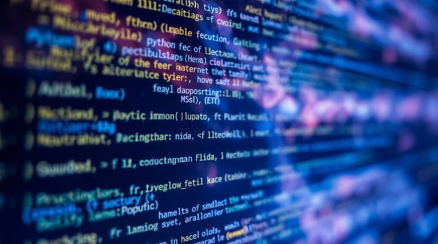

My journey in the Bachelor of Science in Information Technology (BSIT) program has been both challenging and rewarding. I've learned a lot about programming, problem-solving, and the importance of staying current with technological advancements. But, I want to bring you first as to why I chose this path.
It all started with my cousin in father side. His name is Glenn Mark. He was the first grandson my grandparents had. Just after pandemic ended, he finsished his degree in Information Technology. And ever since then, he was living the life! And don't get me wrong, he deserved it. What happened next is that his sister, Dianne, started her journey in the same program. Then, my sister. So, me? I was EXPOSED to computers, programs, and everything. Hence, why I'm here. It was hectic, but it'll be worth it soon.
Back to my journey... I am a first year student, I don't have much experience yet, but I'm determined to make the most of it. Thank you.